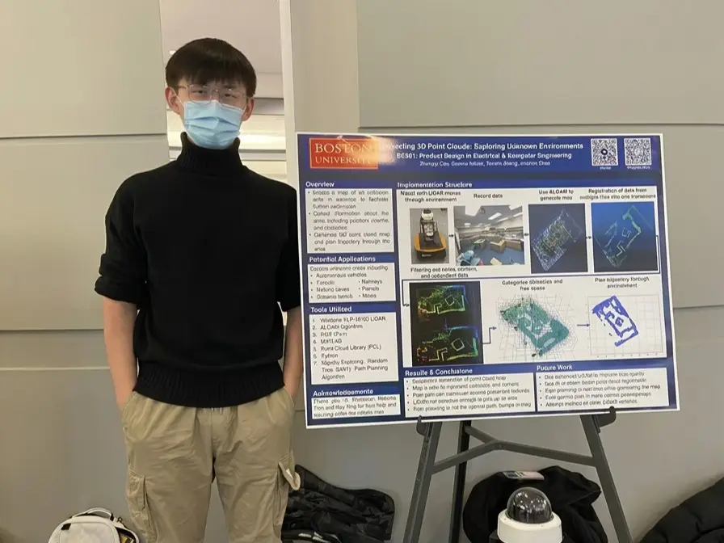
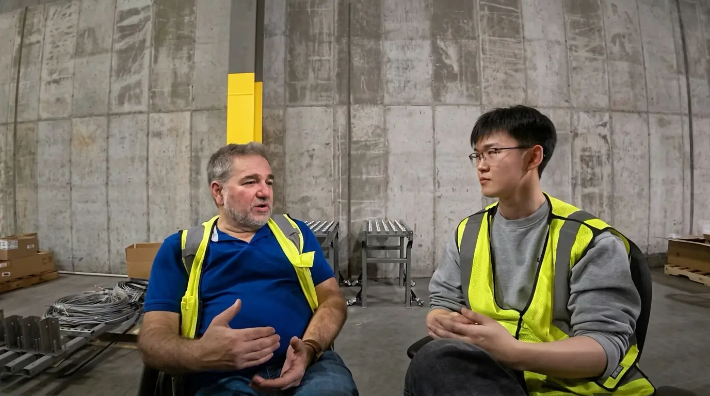
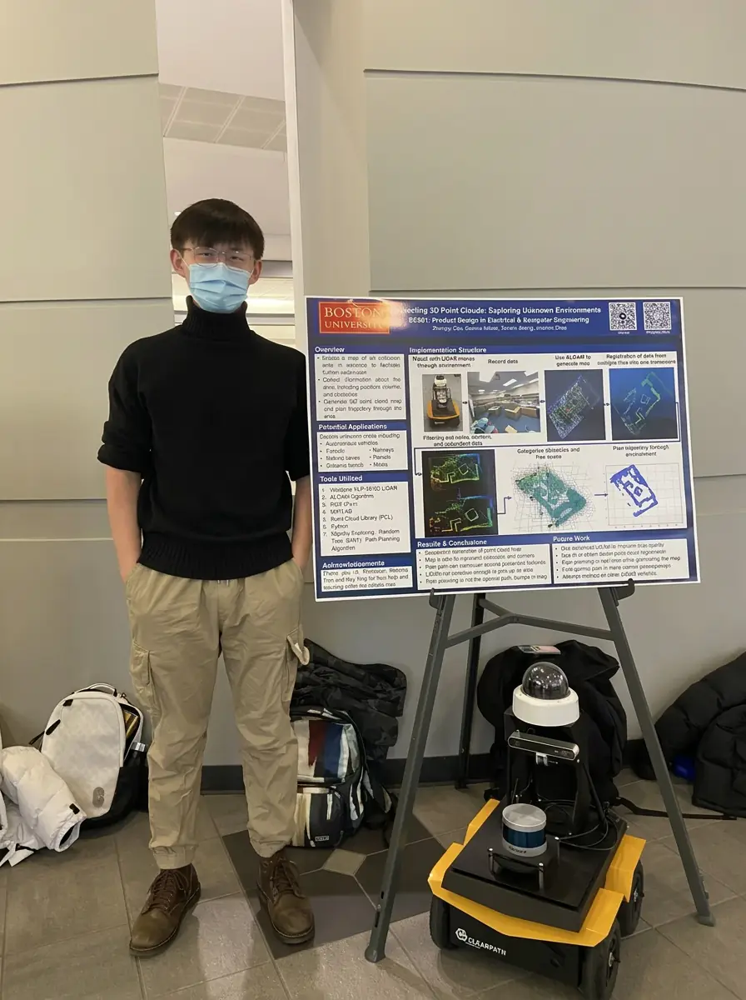
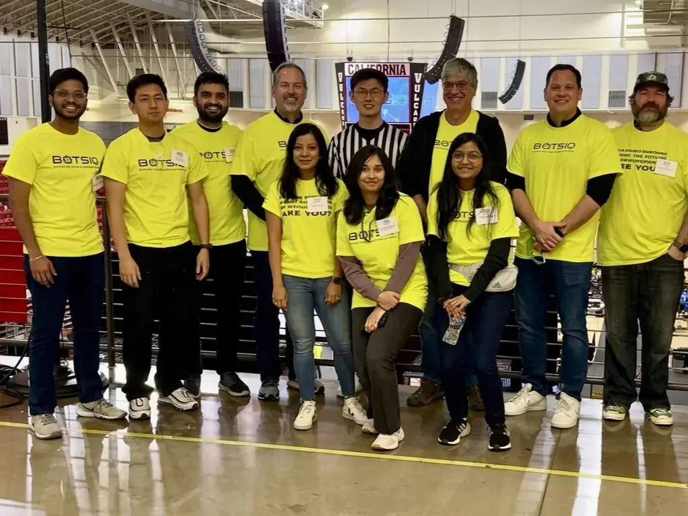

01 / Research & foundations
Boston
Learning robots from the ground up
Graduate work on LiDAR mapping, point clouds and path planning — building the mobile-robot foundations for everything that followed.
Main journey · First stopI create solutions with robotics — from surgical systems and industrial automation to human data and embodied AI.
Four cities, three industries, one throughline: making robotics work for the people who depend on it.
Select a city to explore the journey. Swipe the map to see all locations.

Graduate work on LiDAR mapping, point clouds and path planning — building the mobile-robot foundations for everything that followed.
Main journey · First stopA selection of robotics, automation and community work. Detailed case studies are in progress.

Solution design for autonomous mobile robot fleets — workflow mapping, layout, integration and rollout with operations teams.
Discuss a similar project
Mobile-robot research in LiDAR mapping, point clouds and path planning, connecting perception to navigation.

Volunteering and judging with programs that introduce students to manufacturing, automation and robotics careers.
Looking for something specific? Ask me about a project.
Exploring a robotics project, a career move or a new market? Start with a conversation about what you need.
For students and engineers moving into robotics, or making the transition from building systems to designing solutions.
Talk about your next stepScoping automation projects: feasibility, workflow design, integration risk and realistic rollout paths.
Discuss your projectA grounded perspective on robotics, human data and embodied AI — and what they mean for your roadmap.
Explore your questionsAdvisory, speaking, writing or building together. If it involves robots and real-world problems, I'm interested.
Let's connectI sit between the customer's problem and the engineering that solves it — shaping requirements, designing the solution and owning delivery end to end.
Medical devices and surgical robotics, warehouse and industrial automation with autonomous mobile robots, and human data and simulation environments for embodied AI.
Yes. I started as a software engineer and still build, including an app I designed and developed myself. Staying hands-on keeps my solutions grounded.
I take on a small number of conversations at a time, around careers in robotics, solution design and market perspective. Email me about what you're working on so we can discuss fit and scope.
The San Francisco Bay Area, after stops in Boston, Pittsburgh and Dallas. I work with teams remotely and on-site when a deployment calls for it.
Consulting, collaboration or comparing notes on embodied AI — my inbox is open.